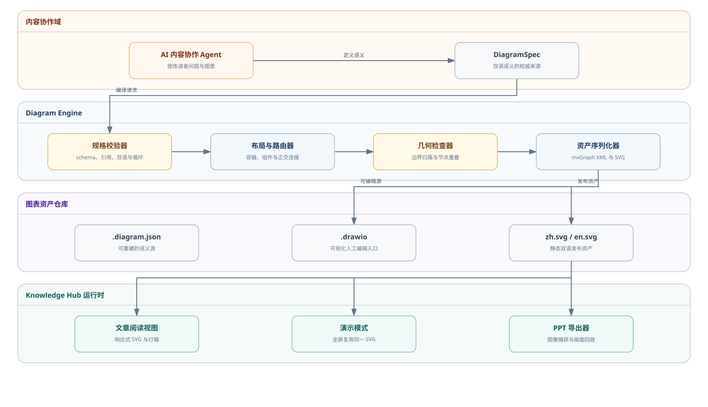
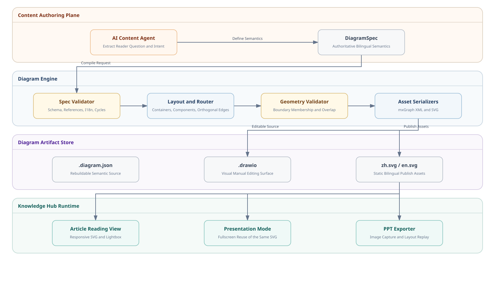
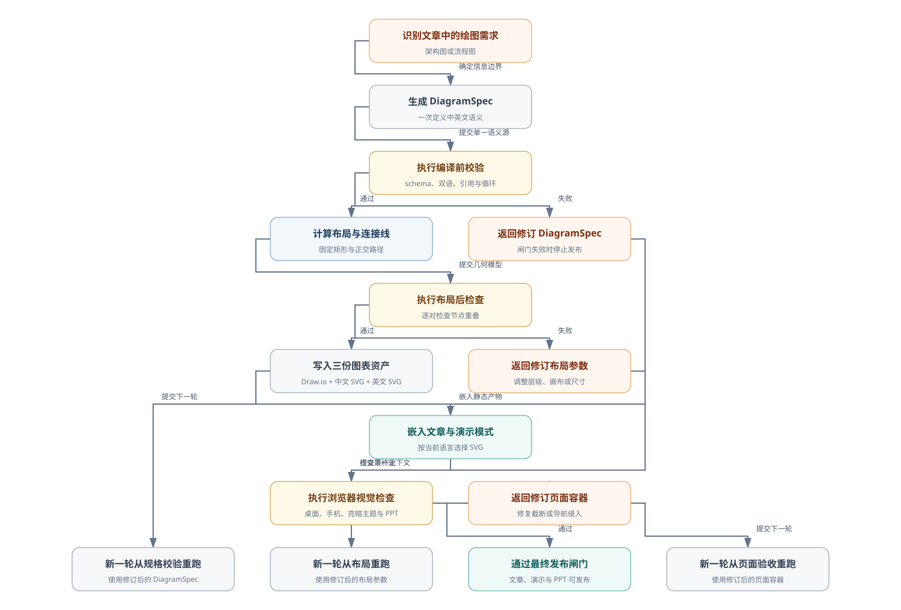
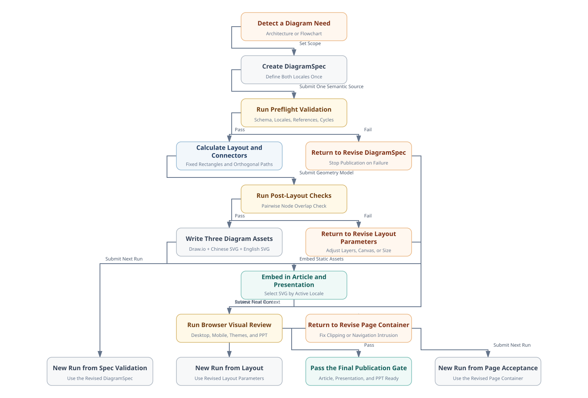
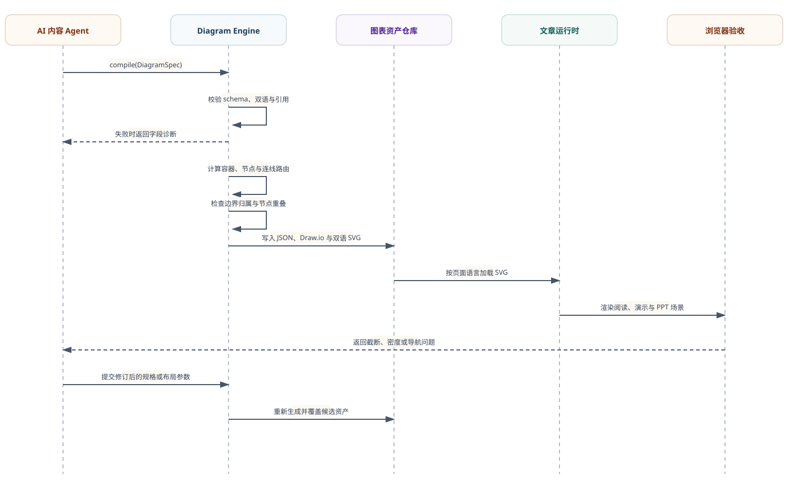
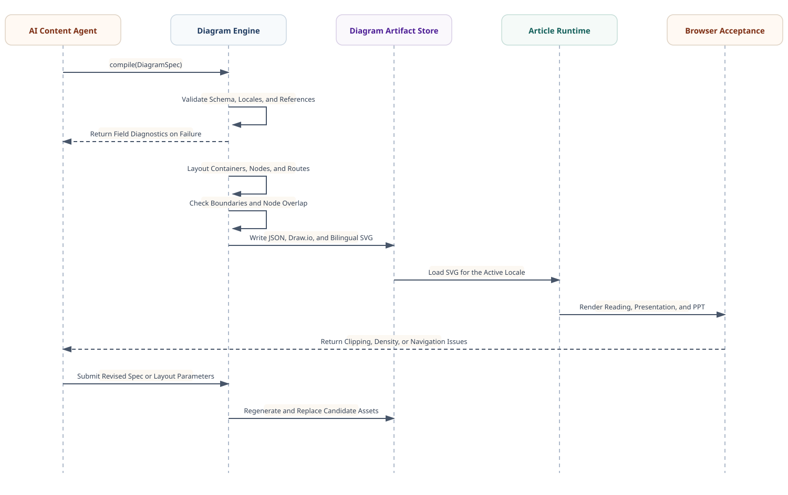

确定性重建
在同一 Node.js 运行环境中，测试夹具连续编译两次必须产生字节一致的 SVG；跨运行环境一致性尚未纳入测试。
01 / 设计要求
Knowledge Hub 的一篇设计文章同时服务滚动阅读、全屏演示、PPT 导出和后续内容维护。图表如果只保存位图，无法可靠修改；如果只保存 Mermaid，复杂架构的图标、分组和连线路由受限；如果在页面运行 Draw.io，又会把编辑器依赖带给每位读者。因此首版用四项可验证要求约束方案。
在同一 Node.js 运行环境中，测试夹具连续编译两次必须产生字节一致的 SVG；跨运行环境一致性尚未纳入测试。
每张图必须提交标准 mxGraph XML 的 .drawio 文件；人工可以在 Draw.io 中继续调整，但语义变更仍回写 DiagramSpec。
节点标签必须提供 zh/en；边标签可以省略，但一旦提供也必须双语。缺少任一必需语言时编译直接失败。
文章只引用 SVG，保持 GitHub Pages 的零构建运行架构；Draw.io 和编译器只参与编辑期，不进入读者浏览器。
02 / 系统架构
系统分为四个架构域：内容协作域定义读者问题和双语图意；Diagram Engine 承担规格校验、容器布局、几何检查和资产序列化；图表资产仓库保存可重建语义源、可编辑 Draw.io 和双语 SVG；Knowledge Hub 运行时只消费静态 SVG，分别服务阅读、演示与 PPT 导出。下图由 system-architecture.diagram.json 通过本设计的编译器生成。


协作域只定义语义；引擎域独占几何计算和格式转换；资产域保存三类不同用途的文件；运行时域选择当前语言的 SVG，并交给现有灯箱、演示模式和 PPT 导出器处理。
| 边界 | 输入 | 输出 | 禁止承担 |
|---|---|---|---|
| DiagramSpec | 文章论点与关系 | 双语语义图 | 像素坐标与 SVG 标签 |
| 编译器 | DiagramSpec + 布局参数 | Draw.io + 双语 SVG | 改写文章论点 |
| 图表渲染路径 | 静态 SVG | 阅读、演示与导出 | 重新布局或调用 AI |
03 / 规格契约
DiagramSpec v1 包含两套明确契约。architecture 与 flowchart 使用 nodes、edges 和 layer；architecture 还必须用 groups 表达真实系统边界。sequence 使用 participants 和按时间排序的 messages，消息可标记为 call 或 response。所有可见文本必须提供 zh/en，所有引用必须指向已声明实体。
{
"version": 1,
"type": "flowchart",
"title": { "zh": "编译流程", "en": "Compilation Flow" },
"layout": { "direction": "right" },
"nodes": [
{ "id": "spec", "layer": 0, "role": "artifact",
"label": { "zh": "图表规格", "en": "Diagram Spec" } },
{ "id": "compiler", "layer": 1, "role": "service",
"label": { "zh": "图表编译器", "en": "Diagram Compiler" } }
],
"edges": [{ "from": "spec", "to": "compiler" }]
}
| 字段 | 约束 | 失败结果 |
|---|---|---|
version | 当前只能为 1 | 拒绝未知格式 |
nodes[].id | 图内唯一 | 编译终止 |
label.zh/en | 两个非空字符串 | 禁止生成单语资产 |
edges[].from/to | 必须引用现有节点 | 报告未知节点 |
取舍：v1 不接受任意坐标、自由曲线和混合画布。这个限制牺牲自由度，换来可重复布局和可自动检查；需要任意绘图时仍可打开生成的 .drawio 文件人工编辑。
04 / 编译器设计
图表编译器满足一个可复现需求：模型只提交语义关系，代码独占几何计算。编译器先按 layer 和 order 分组，再用画布边距、节点尺寸、层间距和同行间距计算坐标；横向图从左到右排列，纵向图从上到下排列；边使用源节点与目标节点边缘中点之间的正交折线。
| 阶段 | 机制 | 输出 |
|---|---|---|
| 验证 | 检查 schema、双语、角色、引用、循环和方向 | 合法语义图 |
| 布局 | 按 layer/order 分组并计算固定矩形；布局后逐对检测相交 | 带坐标的中间模型 |
| 序列化 | 中文和英文分别运行同一布局算法，再写入 mxGraph XML 与 SVG | 1 个 .drawio + 2 个 SVG |
设计否决了让 AI 直接填写 x/y 坐标，因为同一语义会随模型和提示变化。架构图与流程图由容器、layer 和 order 决定几何；时序图由参与者顺序和消息顺序决定生命线与纵向位置。首版没有引入 ELK，采用外部布局器的判据是出现循环、嵌套容器或需要绕开障碍物的连接线。
失败样例：横向画布只有 400px，却放置四层 210px 节点时，布局后矩形发生相交，编译器报告具体节点对并终止；它不会通过缩小字体掩盖错误。
文字边界：v1 使用固定节点尺寸和单行 SVG 文本，尚未自动检测文字溢出。作者必须在浏览器中确认标签完整显示；过长内容应缩短标签、拆分节点或提高全图节点宽度。
05 / 生成流程
结构检查不能替代页面检查：一张无重叠的 SVG 仍可能在手机上过密、在英文版中缩得过小，或在演示模式中侵入导航按钮。因此流程先验证 DiagramSpec 与几何，再把候选资产嵌入文章，最后在真实页面中检查桌面、手机、主题与 PPT。下图由 article-workflow.diagram.json 生成。


06 / 交互时序
架构图说明谁拥有什么，流程图说明工作经过哪些闸门，时序图则说明模块在一次生成迭代中如何交互。AI 内容 Agent 提交 DiagramSpec；Diagram Engine 在内部完成校验、布局、几何检查与序列化；资产仓库向文章运行时提供当前语言 SVG；浏览器验收把页面问题返回内容 Agent，再触发下一轮生成。虚线消息表示诊断或反馈返回。


07 / 质量闸门
当前编译器检查版本、类型、方向、节点数量、ID、layer、角色、双语、边引用、自连接、循环与节点重叠。发布前必须检查五个具体组合：中文亮色桌面阅读、英文深色桌面阅读、英文深色手机阅读、中文亮色桌面演示、英文深色桌面演示。任何后续修改只要改变 DiagramSpec、编译器、图像容器或演示元数据，就必须使相应检查重新失效并重跑。
| 检查层 | 当前判据 | 失败时处理 |
|---|---|---|
| Schema | 版本、类型、节点数、唯一 ID、layer、双语、边引用全部有效 | 停止编译并指出字段 |
| 几何 | 任意两个节点矩形不相交 | 修改布局算法或规格层级 |
| 发布 | 生成命令成功，人工确认每张图存在 .drawio、zh.svg、en.svg | 禁止注册文章 |
| 页面 | 两种语言、亮暗主题、桌面与手机无截断或导航侵入 | 修编译器或图像容器后重测 |
取舍：质量闸门不采用整图像素快照作为唯一自动判据，因为字体渲染、主题和浏览器差异会产生与信息质量无关的变化。结构错误由代码阻断，页面上下文由五个具体组合人工验收；如果标签在英文深色演示页被截断，先修规格或节点宽度，再重跑结构检查和受影响页面。
08 / 边界与演进
本次实现已经完成规格验证、顶层架构容器、横向和纵向分层流程、时序生命线与消息、正交连接、Draw.io XML、双语 SVG 与文章嵌入。它不处理循环图、嵌套容器、云厂商图标和连接线避障。Draw.io Embed 可以调用 JSON Layout Specification 定义的布局并负责 SVG 导出；布局规范分别提供 ELK layered/tree/radial/organic 和独立的 orthogonalEdge/libavoid 避障路由，可在这些需求真实出现时作为几何适配器接入。[1][2]
| 能力 | 状态 | 采用判据 |
|---|---|---|
| 架构、流程与时序图 | 已实现 | 容器化架构、有向分层流程或按消息排序的模块交互 |
| Draw.io 人工编辑 | 已实现 | 打开生成的 .drawio 文件 |
| ELK 自动布局 | 按需接入 | 出现循环图、复合图或三层以上分支 |
| libavoid 连线避障 | 按需接入 | 自动检查发现连接线穿越非目标节点 |
| Next AI Draw.io 应用 | 不引入 | AI 编排已由内容协作 Agent 提供，无需第二套聊天与模型配置 |
选择标准：新增图表类型必须由至少一篇真实文章提出，并且无法由现有 flow-list、Mermaid、数据 SVG 或 DiagramSpec v1 清晰表达；否则不扩展引擎。
References
外部能力只引用 Draw.io 官方文档和 Next AI Draw.io 项目仓库；本文的实现状态以同目录 DiagramSpec、生成资产和 tools/diagram-engine/compiler.js 为准。
drawio.com/docs/reference/embed-mode
支撑 JSON 协议的 load、layout、export、autosave 与静态 SVG 导出能力。
drawio.com/docs/reference/json-layout-specification
支撑 ELK layered/tree/radial/organic、parallel edge 与 libavoid 的布局和连线路由能力。
支撑 Agent 创建 Draw.io XML、按 cell ID 执行 add/update/delete、浏览器预览并导出 .drawio、SVG 和 PNG 的可行性判断。